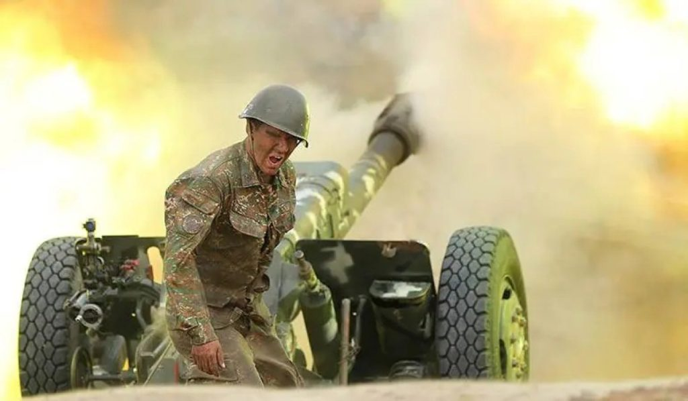
44 օր տևած պատերազմ
Ըստ պաշտոնական տվյալների՝ 44-օրյա պատերազմի հետևանքով զոհվել է 3 833 մարդ, որոնցից 3 755-ը զինծառայողներ են, իսկ 78-ը քաղաքացիական անձինք։ Գրանցվել է նաև 191 անհայտ կորած։
2020 թվականի սեպտեմբերի 27-ին սկսված 44-օրյա պատերազմը դարձավ հայոց նորագույն պատմության ամենաողբերգական և շրջադարձային իրադարձություններից մեկը։ Ադրբեջանի կողմից սանձազերծված լայնամասշտաբ ռազմական գործողությունները, որոնց անմիջական աջակցություն էր ցուցաբերում Թուրքիան, ուղեկցվեցին գերժամանակակից սպառազինության՝ հատկապես անօդաչու թռչող սարքերի և հեռահար հրթիռների զանգվածային կիրառմամբ։
Պատերազմն ընթացավ ծանր մարտերով ողջ շփման գծի երկայնքով՝ խլելով հազարավոր հերոսացած հայորդիների կյանքեր և պատճառելով հսկայական հումանիտար ու տարածքային կորուստներ։ Այն ավարտվեց նոյեմբերի 10-ին ստորագրված եռակողմ հայտարարությամբ, որի արդյունքում Արցախի զգալի հատվածը, ներառյալ բերդաքաղաք Շուշին, անցավ Ադրբեջանի վերահսկողության տակ։ Այս հակամարտությունը ոչ միայն փոխեց աշխարհաքաղաքական իրողությունները Հարավային Կովկասում, այլև դարձավ համազգային ցավի ու վերաիմաստավորման խորհրդանիշ՝ հիշեցնելով անվտանգության և պետականության ամրապնդման անփոխարինելի արժեքի մասին։
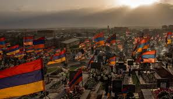
Հայկական պաշտոնական աղբյուրների տարբեր ժամանակների տվյալներով՝ զոհերի թիվը կազմել է մոտ 3 788–3 825։ 2022 թվականին հրապարակված տվյալների համաձայն՝ զոհվել է 3 809 մարդ, իսկ անհետ կորած են համարվել շուրջ 199 զինծառայող և 21 քաղաքացիական անձ։
Զինծառայողների կորուստները հիմնականում մարտական գործողությունների հետևանք են, քաղաքացիական զոհերը՝ հրետակոծությունների և ռազմական գործողությունների արդյունք։
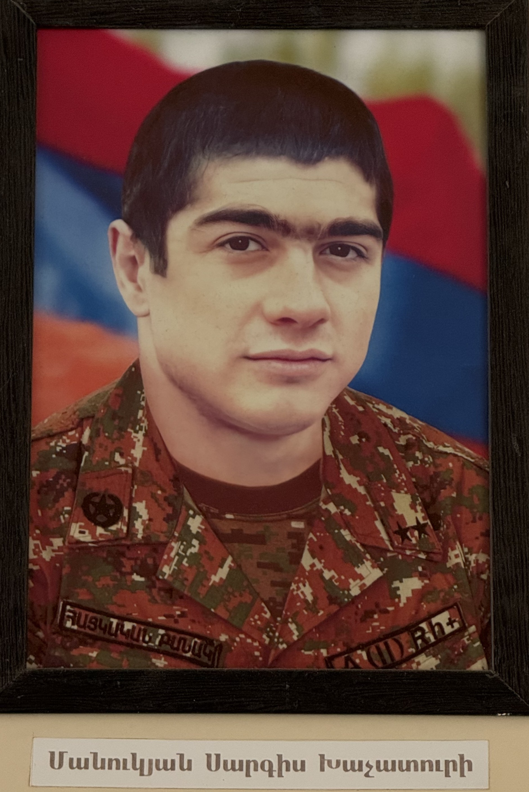
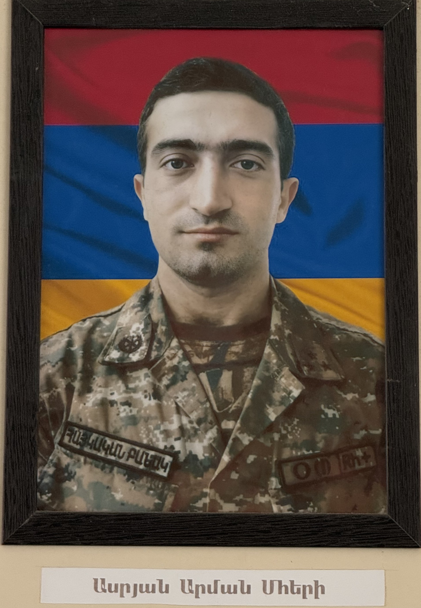
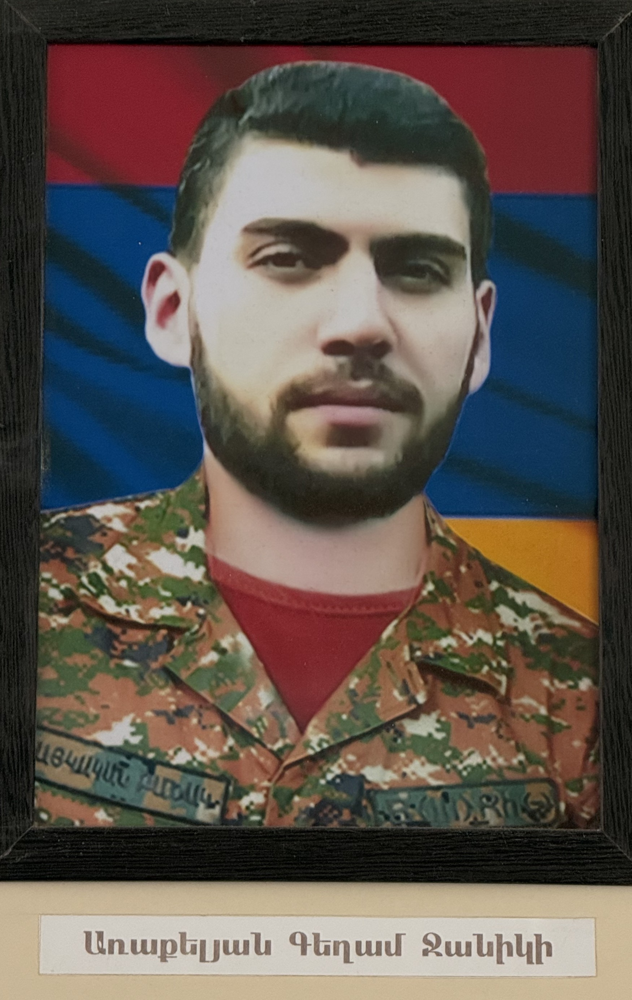
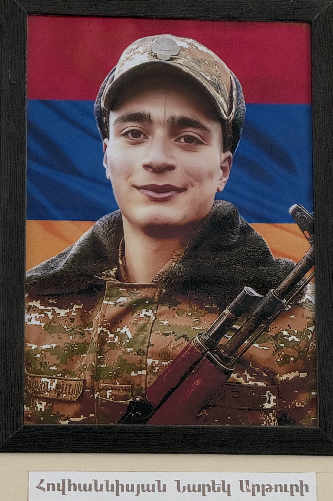
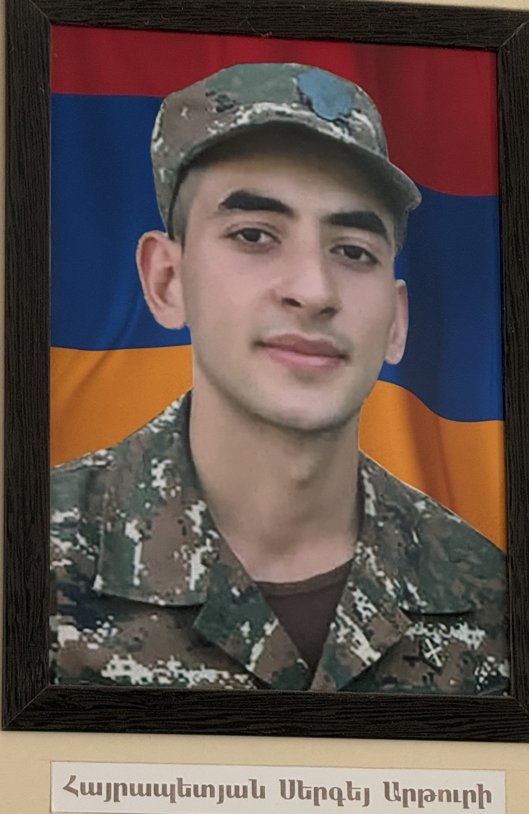
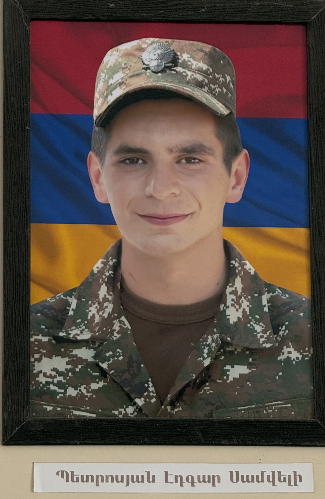
«Նրանք չգնացին, նրանք մնացին մեր մեջ՝ որպես հավերժական ներկայություն։»
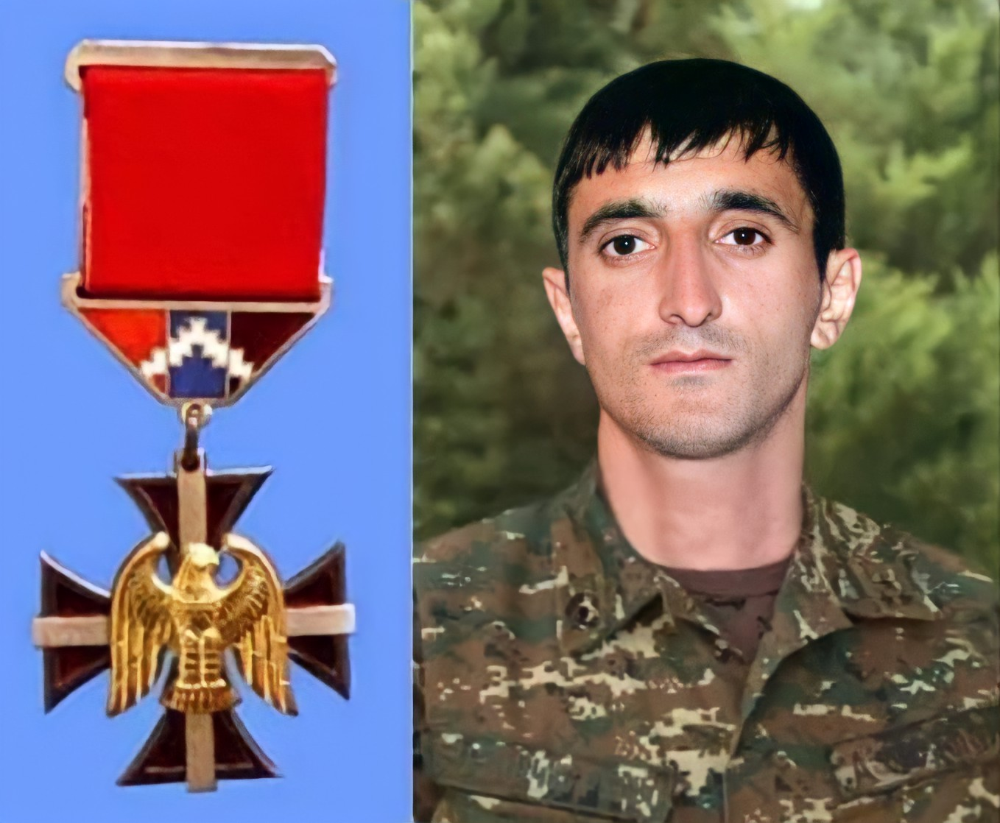
Թովմաս Թովմասյանը ծնվել է 1983թ. դեկտեմբերի 10-ին, Ասկերանի շրջանի Ներքին Սզնեք գյուղում: Չորս եղբայր էին, նա երրորդն էր: Սովորել է գյուղի Գրիշա Միքայելյանի անվան միջնակարգ դպրոցում, առաջին դասարան գնացել է 1990թ., եղել է հարվածային և ավարտել 2000թ.:
2020թ. սեպտեմբերի 27-ին սկսված պատերազմի ժամանակ զենքը ձեռքին դուրս է եկել թշնամու դեմ և ցուցաբերած արիության համար արժանացել Արցախի հերոս բարձրագույն կոչմանը: Պատերազմի ողջ ընթացքում` 44 օրում եղել է տարբեր դիրքերում` «Եղնիկներ»-ում, Մռավում, Սղնախում, Շուշիում, Քարին տակում:
Իր ջոկատով բավականին մեծ աշխատանքներ են կատարել «Եղնիկներ»-ում. անցնելով հակառակորդի թիկունք՝ լուրջ մարդկային և տեխնիկական կորուստներ են հասցրել: «Եղնիկներ»-ից հետո՝ լսելով, որ Մռավում իրավիճակը ծանր է, անմիջապես մեկնում են այնտեղ, ապա Սղնախ՝ Չախմախ կոչվող տեղամաս:
Վիրավորվել է նոյեմբերի 7-ին՝ Շուշիի մատույցներում: Ամուսնացած է, ունի 2 երեխա:
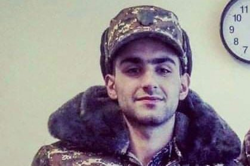
Յուրա Հայկարամի Ալավերդյան (դեկտեմբերի 27, 2000, Երևան, Հայաստան), հայ զինվորական, Արցախի պաշտպանության բանակի ավագ սերժանտ, հրետանային մարտկոցի «Ֆագոտ» համակարգի հաշվարկի հրամանատար, 44-օրյա պատերազմի մասնակից։ 2020 թվականի հոկտեմբերի 4-ին արժանացել է «Արցախի հերոս» բարձր կոչման՝ պարգևատրվելով «Ոսկե արծիվ» շքանշանով։
Ծնվել է 2000 թվականի դեկտեմբերի 27-ին, Երևանում՝ Հայկարամի և Աննայի ընտանիքում։ Ավարտել է Երևանի Ֆ. Նանսենի անվան թիվ 150 դպրոցը, որը 2020 թվականի հոկտեմբերի 5-ին Հայաստանի կրթության, գիտության, մշակույթի և սպորտի նախարարության կողմից ստացել է ոսկե մեդալ՝ «Արցախի հերոս» ուսանելու համար։ Սովորել է Երևանի Ինֆորմատիկայի պետական քոլեջում։
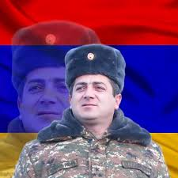
Վահագն Ասատրյանը մասնակցել է 2020 թվականի հայ-ադրբեջանական պատերազմին։ Իր հրամանատարությամբ գործող ստորաբաժանումը մի շարք մարտական գործողությունների է մասնակցել։ Զոհվել է Արցախի Հանրապետության Հադրութ քաղաքում։
Պատերազմի սկսվելու առաջին օրը՝ սեպտեմբերի 27-ին, նա իր ղեկավարած ստորաբաժանման հետ միասին մեկնել էր Սյունիքի մարզ, որտեղից նույն օրը տեղափոխվել Արցախի Հանրապետության Շահումյանի շրջան։ Հոկտեմբերի առաջին օրերին Վահագն Ասատրյանի մշակած ռազմագործողությամբ ու հրամանատարությամբ իր ստորաբաժանումը կարողացավ վերագրավել Շահումյանի շրջանի «Շղթաներ» դիրքը, տալով մեկ զոհ՝ Խաչատուր Խաչատրյանը։ Վահագն Ասատրյանի կարգադրությամբ այդ դիրքը կոչվեց զոհված Խաչատրյանի պատվին։
Իր ղեկավարած հատուկ նշանակության ստորաբաժանման հետ կատաղի մարտեր է մղել Հադրութ քաղաքում և մերձակայքում։ Զոհվել է Հադրութ քաղաքի պաշտպանության ժամանակ ադրբեջանական զինված ուժերի կողմից արձակված հրթիռի հարվածից։
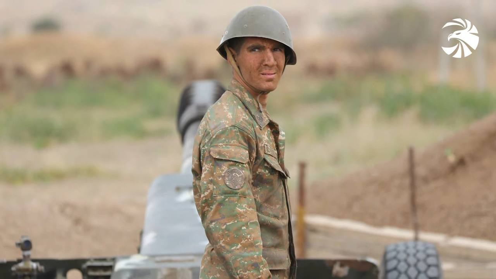
Ալբերտ Հովհաննիսյանը ծնվել է 2001 թվականի սեպտեմբերի 15-ին Երևան քաղաքում։
Ալբերտին հաջողվել է ոչ միայն մեծ կորուստներ հասցնել թշնամուն, այլև փայլել իր անմնացորդ ծառայությամբ։ Իսկ նրա հանրահայտ լուսանկարը յուրովի է արտացոլում հայ ժողովրդի հզոր ոգին խորհրդանշող կերպարն արցախյան այս պատերազմում։ Արցախը բարձր է գնահատում իր հերոսի սխրանքը, և, իմ հրամանագրով՝ Ալբերտ Հովհաննիսյանը պարգևատրվել է «Արիության համար» մեդալով։ Ալբերտն ու իր ընկերները Հայրենիքի հանդեպ սերն ամեն ինչից վեր դասեցին, և հայ ժողովուրդը Ձեզ հետ հավասար կարող է և պետք է հպարտանա իր նվիրյալ զավակներով։
Կրտսեր սերժանտ, հրետանավոր: Հայրենիքի պաշտպանության գործում մատուցած բացառիկ ծառայությունների համար հետմահու արժանացել է Արցախի հերոս բարձրագույն կոչման։ Նրա լուսանկարը դարձավ 44-օրյա պատերազմի խորհրդանիշներից մեկը։
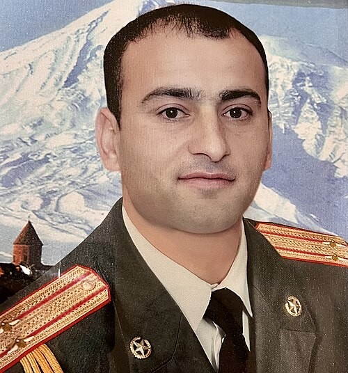
Դավիթ Ղազարյանը ծնվել է 1989 թվականի մայիսի 5-ին Արարատի մարզի Վեդի քաղաքում։ Ավարտել է Վեդիի թիվ 1 միջնակարգ դպրոցը, որից հետո՝ 2006 թվականին ուսումը շարունակել Վազգեն Սարգսյանի անվան ռազմական համալսարանում, որն էլ ավարտել է 2010 թվականին լեյտենանտի կոչումով և ծառայության անցել Արցախում։ 2016 թվականին մասնակցել է Քառօրյա պատերազմին։
Զոհվել է 44-օրյա պատերազմի մարտական գործողությունների ժամանակ։ Արցախի նախագահ Արայիկ Հարությունյանի հրամանագրով՝ բացառիկ ռազմական վաստակի համար հետմահու պարգևատրվել է Արցախի Հանրապետության «Ոսկե արծիվ» շքանշանով և արժանանացել «Արցախի հերոս» բարձրագույն կոչման։
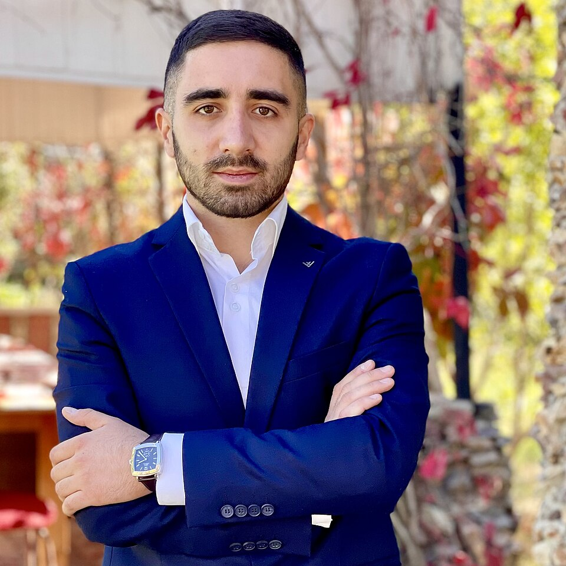
2020 թվականի հոկտեմբերի 4-ին Արցախի հանրապետության նախագահ Արայիկ Հարությունյանի հրամանագրով Էդգար Մարկոսյանը արժանացել է Արցախի Հանրապետության «Արցախի հերոս» բարձրագույն կոչման՝ պարգևատրվելով «Ոսկե արծիվ» շքանշանով։ Էդգար Մարկոսյանը 2020 թվականի Հայ-ադրբեջանական պատերազմի ժամանակ Թալիշի ուղղությամբ խոցել է 10 տանկ։ Երևանի թիվ 78 հիմնական դպրոցը, որտեղ նա սովորել է, ստացել է ոսկե մեդալ «Արցախի հերոս» ուսանելու համար։
Ծնվել է 1997 թ. Կոտայքի մարզի Հրազդան քաղաքում մանկավարժ Անահիտ Սարիբեկյանի և ինժեներ Էդվարդ Մարկոսյանի ընտանիքում։ Ըստ տարբեր աղբյուրների՝ Էդգար Մարկոսյանը ծնողներից գաղտնի է մասնակցել Արցախյան պատերազմին, և իր ծնողները իմացել են դրա մասին միայն հերոսի կոչում ստանալու ժամանակ։